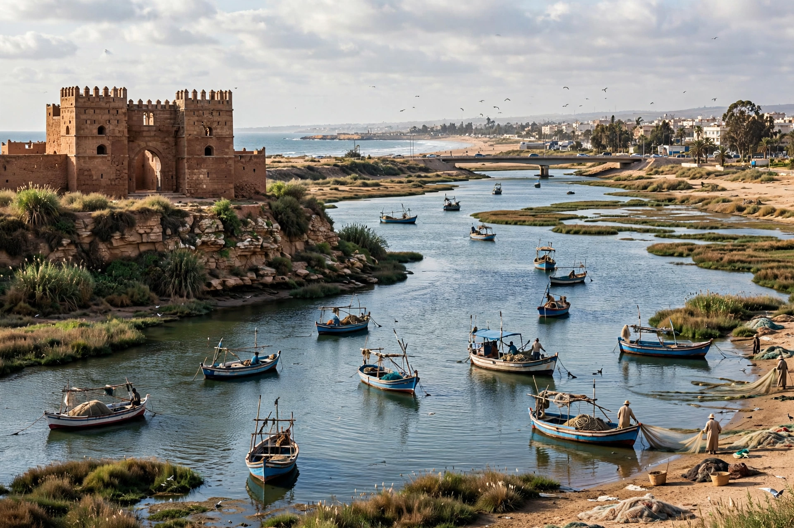

From Wikipedia, the free encyclopedia

| Country | Morocco |
|---|---|
| Region | Rabat-Salé-Kénitra |
| Founded | 1912 (as Port Lyautey) |
| Population | Approx. 430,000 (2014 census, city proper) |
| Former name | Port Lyautey (1912–1956) |
Kenitra (Arabic: القنيطرة, "the little bridge") is a city in north-western Morocco, capital of the Rabat-Salé-Kénitra region, situated on the Sebou River about 30 km north of the capital, Rabat. It is a major river port and industrial centre, known for its automotive free zone, its university, and the nearby beach town and nature reserve of Mehdya.
Before the French protectorate, the site was occupied chiefly by the Kasbah of Mehdya at the mouth of the Sebou, controlling river traffic; Phoenician and Roman settlements existed in the vicinity. The modern city was founded in 1912 by Resident General Hubert Lyautey as Morocco's principal Atlantic river port and renamed Port Lyautey. During the Second World War, American forces landed nearby in November 1942 during Operation Torch, capturing the airfield at the Battle of Port Lyautey; the United States later maintained a naval air station at Kenitra until 1991. After Moroccan independence in 1956 the city took its present Arabic name.
Kenitra stands on the rich agricultural plain of the Gharb, one of Morocco's main farming regions for citrus, sugar cane and rice. Since the 2010s the Atlantic Free Zone near the city has attracted major automotive investment, including a Stellantis (formerly PSA) assembly plant. The city is served by the Rabat–Tangier railway and the A1 motorway. Ibn Tofail University, founded in 1989, is a major employer. Nearby are the Sidi Boughaba lake nature reserve, noted for migratory birds, and the surfing beaches of Mehdya.
See also: Rabat